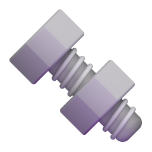
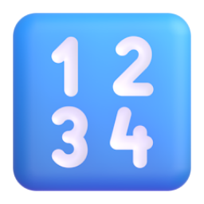
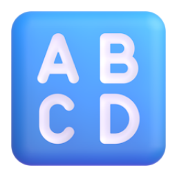
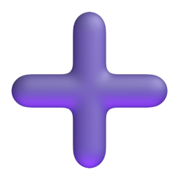

Introdução à Álgebra Booleana
Uma introdução a um dos conceitos mais essenciais da arquitetura computacional.
Portas Lógicas
Um guia/resumo sobre as fundamentais portas lógicas, das simples NOT, AND e OR até as mais específicas como XNOR.
Tabelas Verdade
Um pequeno guia, focado no que é, como funciona e como se faz, uma tabela verdade.
Bases Numéricas
Esse guia contém um panorama geral das bases 2, 8, 10 e 16, as mais usadas na computação.
Entendendo Expressões Booleanas
A essa altura, os guias anteriores já usaram, e muito, expressões booleanas. Esse guia serve para aprofundar sua leitura e interpretação delas.
Redução de Expressões Booleanas
Um guia sobre as técnias, leis, teoremas e identidades usados na simplificação de expressões booleanas.
Exercícios de Redução
Esse é um pequeno bônus, contendo alguns exercícios de redução explicados passo a passo.
Álgebra Booleana
Operações entre bases, soma e subtração binária, complemento de 2 e outros conteúdos.